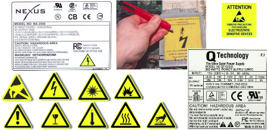
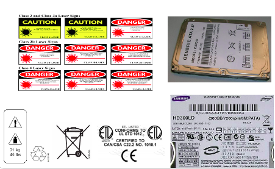
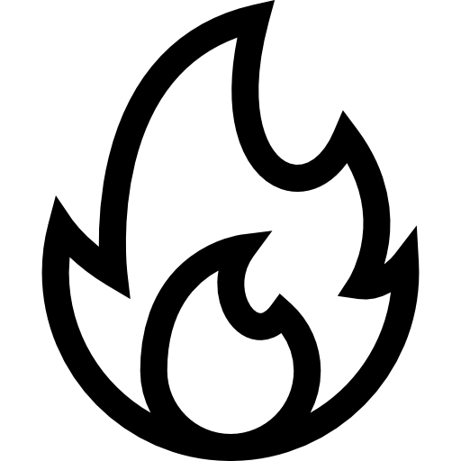
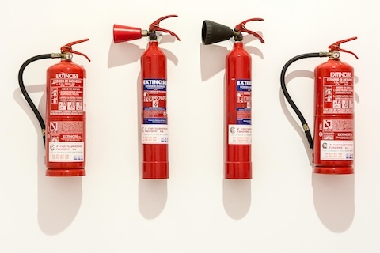
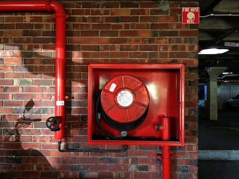
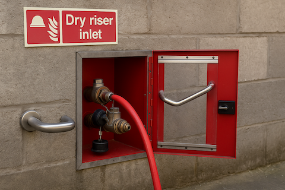
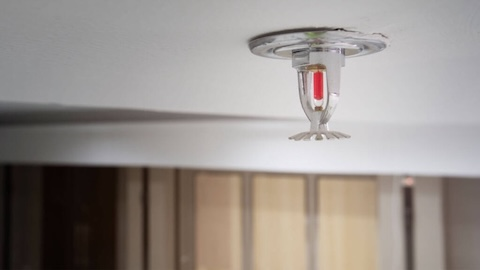
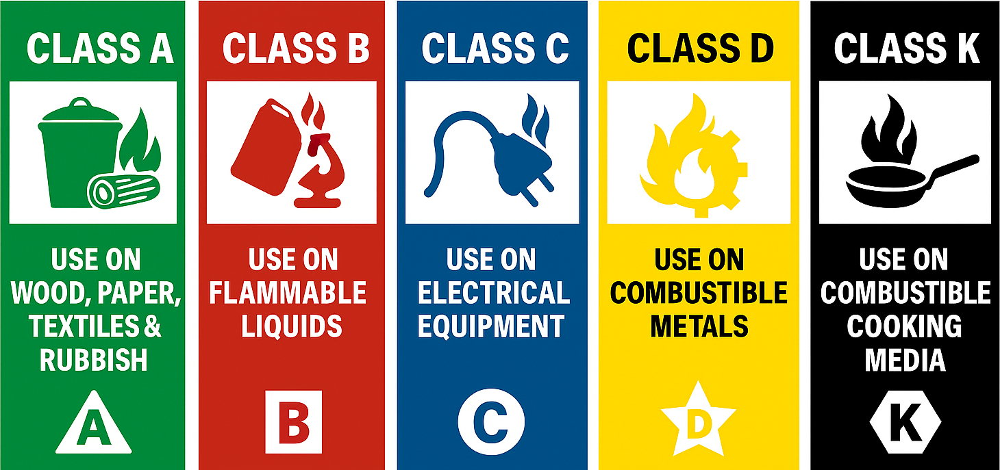
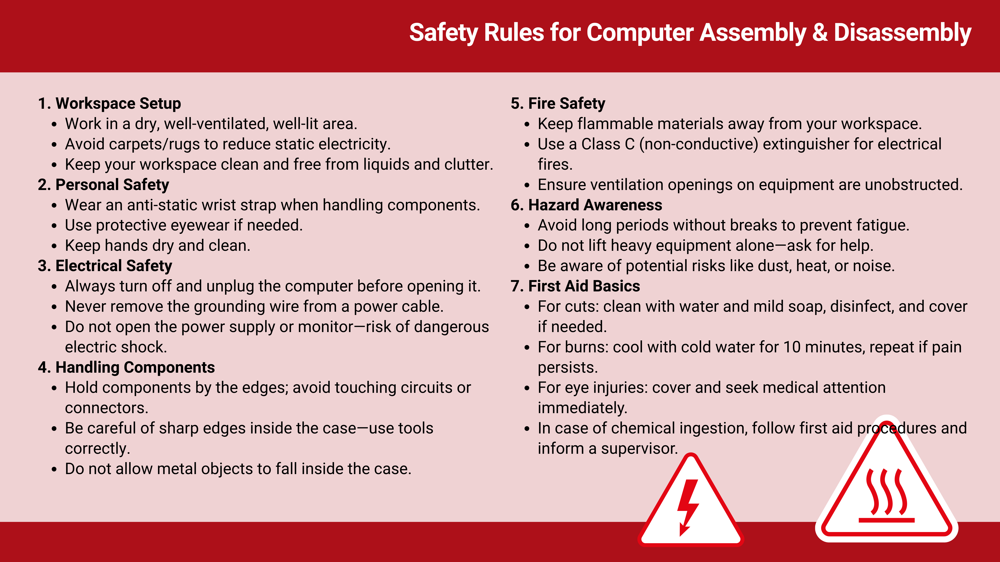

Safety Protocols¶
Before working with computer hardware, it is essential to understand and apply safety rules that protect not only the equipment, but also the people handling it and the environment. Even small mistakes during disassembly or assembly can result in injuries, damaged components, or hazards such as fire and electric shock. By following safety rules, you ensure a safe learning environment and develop good professional habits that will serve you throughout your career.
In this section, we will review eight key areas of safety to guide you in your work:
Workplace Safety
Accident Prevention
General Risk Factors
General Risk Factors in Computer Handling
Safety Signs
Workshop Precautions
Methods and Systems for Fire Extinguishing
First Aid
Electricity in the computer: Occupational Hazards And Environmental Protection¶
1) Workplace safety¶
It is the set of techniques and procedures aimed at eliminating or reducing the risk of workplace accidents and the damage they may cause: primarily to people, but also to property and the environment.
Its goal is to prevent workplace accidents by avoiding their occurrence or minimizing their immediate consequences on people and property. Therefore, workplace safety not only considers accidents that cause injuries but also those that could potentially cause them.
2) Accident prevention¶
Safety aims to prevent workplace accidents, which are essentially abnormal, unintended, and undesired events that occur unexpectedly and are usually avoidable. They interrupt normal work activity and may cause injuries to people. There are situations that can lead to accidents, either with injuries or without (incidents).
To prevent accidents, it is necessary to:
Know the risks we are exposed to
Understand that an accident can happen at any time
Be aware that it can happen to you too
Understand the real consequences of accidents
Be informed about the human and financial losses accidents can cause
3) General risk factors¶
Environmental setting: Must ensure thermal, visual, and acoustic comfort. A lack of these can lead to mistakes that may cause accidents or simply result in irritability. A comfortable situation is one in which environmental variables do not create distractions, fatigue, or discomfort. The goal is to ensure that the person does not experience discomfort that distracts their attention or prevents them from focusing on elements important to their health and safety.
Organization: A key element of the environment is how the work is organized (training, information, communication, group relationships, etc.), which should also be comfortable and well-adapted to workers.
Psychic comfort: This is less obvious than physical or mental comfort and depends on each person’s individual traits. Psychology helps us group behaviors to predict reactions. Discomfort can appear in the short term (irritability, anxiety), medium term (sleep disturbances, tension headaches), or long term (depression, gastrointestinal, cardiovascular, or skin conditions), affecting people both inside and outside the workplace.
4) General risk factors in computer handling¶
Electrical installations: Computer systems are powered by electricity, which can cause electric shocks to the worker.
Materials with fire risk: Electrical short circuits can cause fires not only in the computer but also in the building’s electrical system.
Handling tools or components: Using tools or computer parts presents risks for the worker.
Work environment: Noise, humidity, dust, cold, etc., can affect the worker’s health.
Forced postures: The posture we adopt during daily work can lead to physical problems for the worker.
Handling loads: Carrying heavy materials can cause physical injuries.
Mental load and addiction: Concentrating for long periods can also be a risk factor. Excessive computer use can lead to addictions (to the Internet, games, messaging, social networks, etc.) that should be addressed before they become health problems.
5) Safety signs¶
It is important to know and respect the warning signs that appear on different elements.
 {kind=link}
{kind=link}
Besides precautions, we will also check if they comply with the main safety regulations, especially those of the European Community.
Regulated by the United States and Canada (It can be found on hard drives, floppy drives…)
{kind=link}
Regulated by the European Union (It has passed the European Union’s safety standards)
{kind=link}
European Electrical Certification Standards (It has passed the European Union’s electrical safety standards)
{kind=link}
Regulated by German standards (TEST) (Geprüfte Sicherheitt)
{kind=link}
6) Workshop precautions¶
{kind=link}
Location: Choose a dry, well-ventilated workspace. There should be enough light to clearly see all components. Avoid areas with carpet or rugs, as these tend to generate static electricity. A good choice would be a bare, grounded surface.
{kind=link}
Static electricity: Static electricity is the greatest danger for the parts we assemble. Even a tiny discharge, too small for us to feel, can damage expensive and delicate electronic parts like the CPU, RAM, and other chips. It’s important to use an anti-static wrist strap.
{kind=link}
Power supply: Turn off the computer and unplug its power supply before installing or removing any components. If there is electricity flowing through components while handling them, they can be damaged, including the motherboard. Never cut or remove the grounding wire from the power cable. This safety measure protects against possible high-voltage discharges between the computer and the user.
{kind=link}
Cuts: Cuts can happen from using pointed tools (screwdrivers, wire strippers, knives, etc.) or from sharp metal parts inside the computer. Be careful with sharp edges, especially inside the computer. Handle the inside of the computer case and its components carefully to avoid cutting your hands. (Sharp edges of the case can be smoothed with sandpaper before assembly.)
{kind=link}
Disassembling components: Avoid disassembling electronic components like the power supply or monitor, as it is very dangerous. They contain high-voltage capacitors that can cause serious electric shocks if touched. You can receive a severe or even fatal shock, even when the unit is unplugged, because they store a lot of energy.
{kind=link}
Toxicity: Some electronic components can be toxic, so we are exposed to this risk, usually through wounds.
{kind=link}
Short circuit or fire: A fire can be caused by an electrical short circuit, overheating, or even a battery explosion. We must avoid having conductive liquids nearby while handling the computer (coffee, water, etc.) and prevent any metal objects from falling inside the case while the computer is plugged in. It is important to check that the ventilation holes are not blocked and are functioning properly.
7) Methods and systems for fire extinguishing¶
Extinguishing methods:
 |
Fire extinguishers |
 |
Fire hose reels |
 |
Dry risers in buildings |
 |
Automatic sprinklers |
Different materials and equipment require different types of fire extinguishers. Knowing which extinguisher to use can prevent accidents and protect both people and devices. The image below shows the five fire classes (A, B, C, D, and K). Each class refers to the type of material that is burning, for example, Class A for paper and textiles, Class B for flammable liquids, and Class C for electrical equipment.
Fire classes¶
{kind=link}
Different extinguishers are designed for different fire classes. Using the wrong one can make the fire worse or cause harm. The table below shows which extinguishers are safe and effective for each type of fire.
Extinguisher Type |
CLASS A |
CLASS B |
CLASS C |
CLASS D |
CLASS K |
|---|---|---|---|---|---|
Foam Spray |
Yes |
Yes |
No |
No |
No |
ABC Powder |
Yes |
Yes |
Yes |
Yes |
No |
Carbon Dioxide |
No |
Yes |
No |
Yes |
No |
Wet Chemical |
Yes |
No |
No |
No |
Yes |
Water |
Yes |
No |
No |
No |
No |

When dealing with electrical equipment, such as computers, always use a Class C extinguisher (e.g., CO₂ or Halotron). These do not conduct electricity and prevent further damage to devices.
8) First aid¶
Treatment of wounds:
Clean the wound with plenty of water and mild soap, then disinfect it with alcohol. Inspect the wound and remove any foreign objects if present, then disinfect again with alcohol. Leave the wound exposed to air if there is no risk of contact; otherwise, cover it with a band-aid.
Treatment of burns:
If necessary, remove all clothing from the burned area except any that is stuck to the skin. Immerse the burned area in cold water for 10 minutes, repeating every 40 minutes if pain persists. If the pain does not subside, see a doctor.
Eye emergencies:
These should only be treated by ophthalmologists. The most serious eye injuries are: burns, which should be treated as burns (cleaning and cold water); eye trauma caused by blows, welding, or sharp objects, in which case the eye should be covered; and contusions around the eyelid, where indirect application of ice can be used.
Toxic substances:
If corrosive substances have been ingested, drink milk or water. If the substance is acidic, take magnesium; if it is alkaline, take vinegar or lemon. In case of hospitalization, a sample of the substance should be taken and contact made with the Toxicology Institute.
If non-corrosive substances are ingested, vomiting should be induced by tickling the uvula with a spoon or by drinking a cup of coffee with salt.
On the following sheet 👇, you will find a summary of the Safety Rules for Computer Assembly and Disassembly, which you should use as a reference throughout all upcoming sessions:
{kind=link}